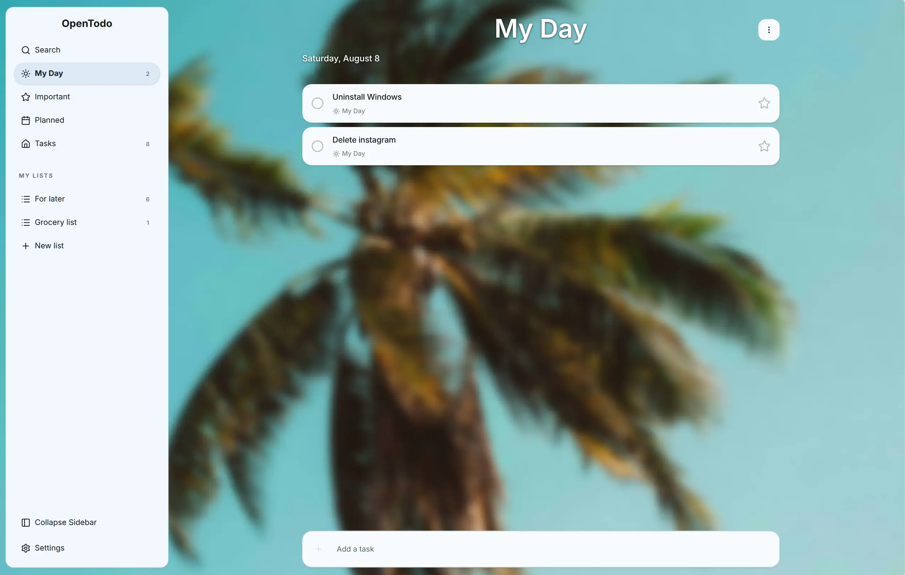
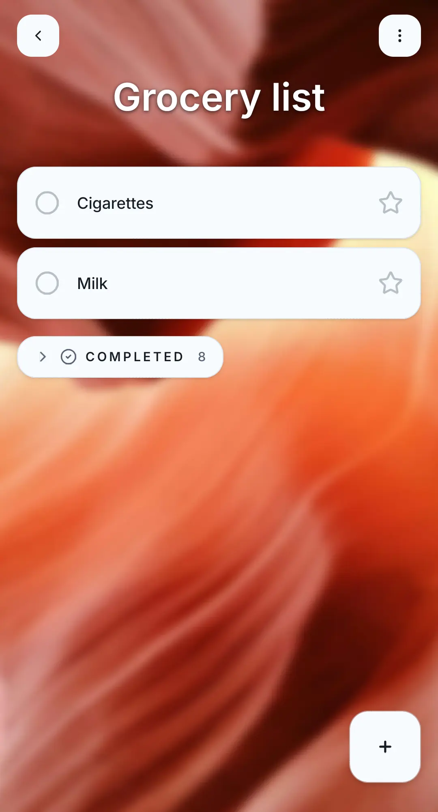

Smart lists
My Day, Important, Planned, and custom lists.
OpenTodo is a straightforward to-do app with smart lists, subtasks, search, and a clean layout on desktop and mobile.


My Day, Important, Planned, and custom lists.
Your tasks stay in sync across desktop and mobile, automatically.
Break larger tasks into smaller steps.
Move, complete, or delete batches in one go.
Find tasks fast and reorder them how you want.
Use wallpapers and dark mode if you want a different look.